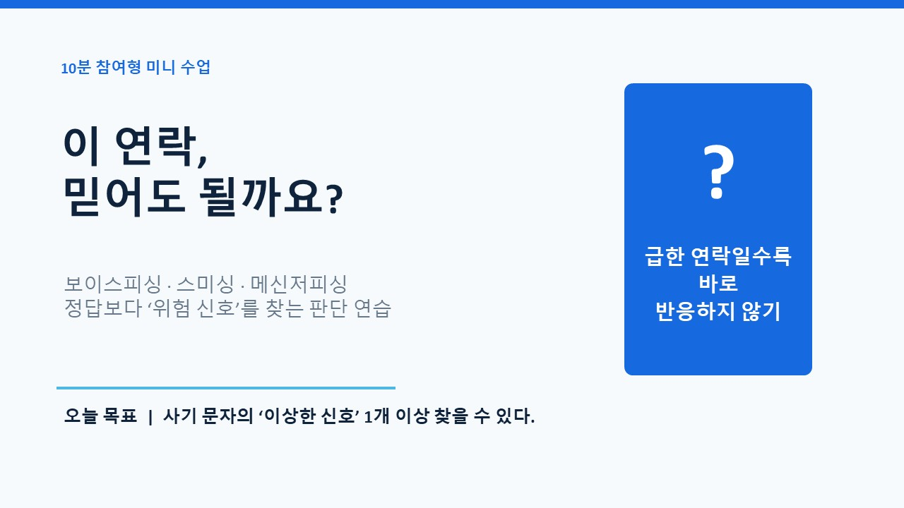
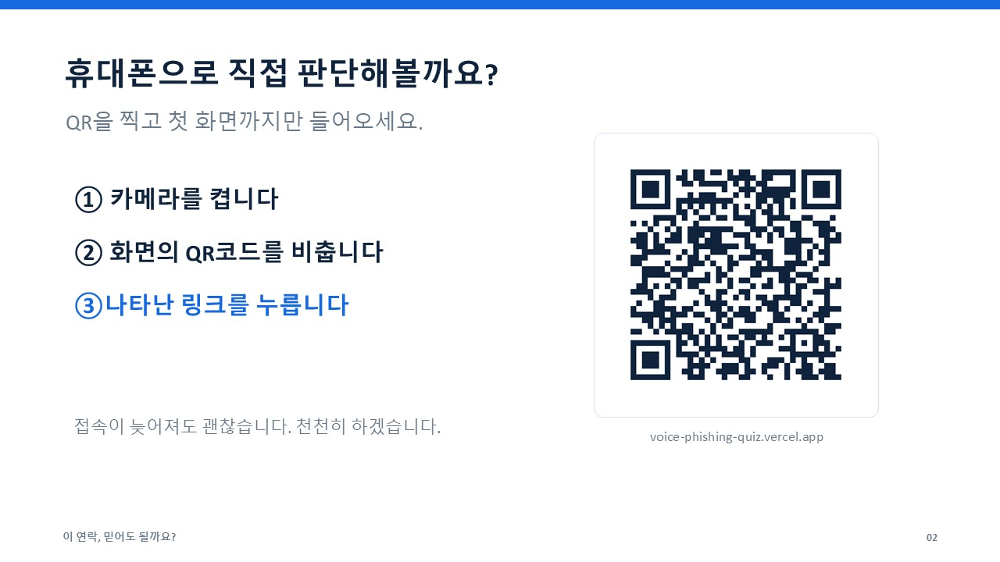
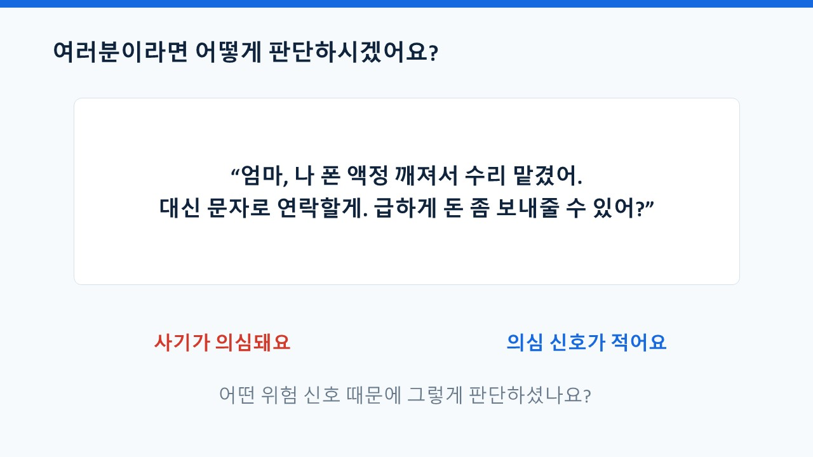
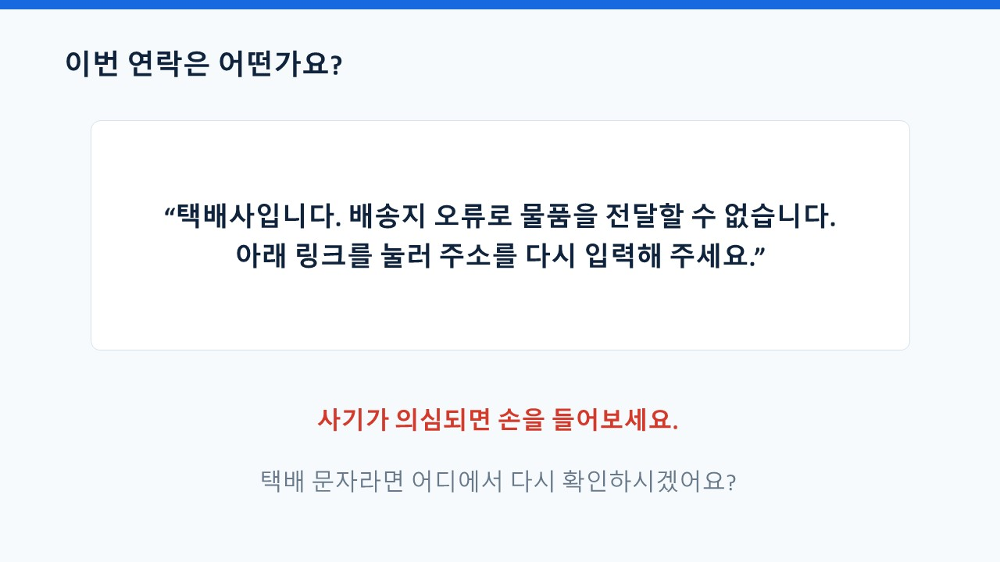
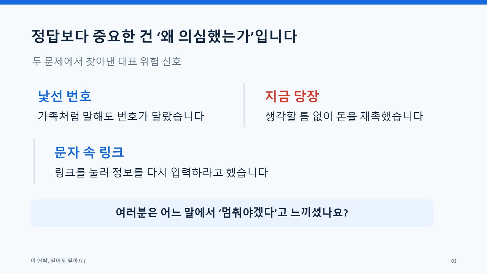
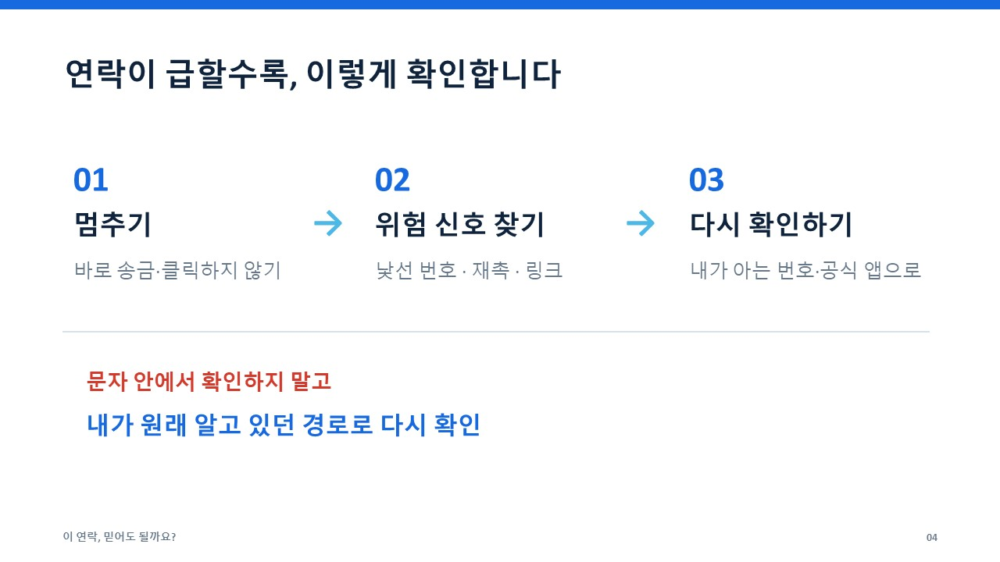

Lesson
복습용 웹 교안입니다. 강의에서 본 슬라이드와 설명을 그대로 옮겨 두었으니, 언제든 다시 보며 익혀 보세요.
01

반갑습니다. 여러분 곁에 보라샘입니다.
여러분들 요즘 보이스 피싱 사기가 날이 갈수록 발전하고 있다는 거 다들 느끼시지요? 오늘은 여러분들과 함께 사기 문자나 사기 전화의 이상한 신호 1개 이상 찾아보는 연습을 해 보겠습니다.
02

제가 바이브코딩으로 만든 보이스피싱 판별 퀴즈 10문항이 있습니다.
먼저 여러분의 스마트폰을 열어 주세요. 지금 화면에 보이는
큐알 코드를 비춥니다. 핸드폰에 링크가 나타나면 링크를 누릅니다.
03

가족처럼 문자가 왔지만, 번호는 다른 사람 번호이고, 또 급하게 돈을 보내달라는 이 부분이 바로 의심 신호입니다.
04

링크를 누르라는 순간, 잠깐 멈추시고 다시 생각해보세요.
반드시 해당 쇼핑몰이나 공식 택배사 홈페이지에서 확인하셔야 합니다.
05

두 문제에서 찾아낸 대표 위험 신호는 무엇일까요
바로 가족처럼 말해도 번호가 달랐습니다.
또 생각할 틈 없이 돈을 재촉했습니다.
06

첫째, 멈추기
둘째, 위험 신호 찾기
셋째, 다시 확인하기
07
사기꾼은 생각할 시간부터 빼앗습니다.
오늘은 2문항만 함께 풀어보았습니다. 나머지 8문항도 천천히 풀어보며 위험 신호를 확인해보세요.
수업이 끝난 뒤에도 보라쌤의 웹사이트 aibora.kr에서 오늘의 교안과 10문항 실습을 다시 확인하며 복습할 수 있습니다.
감사합니다.